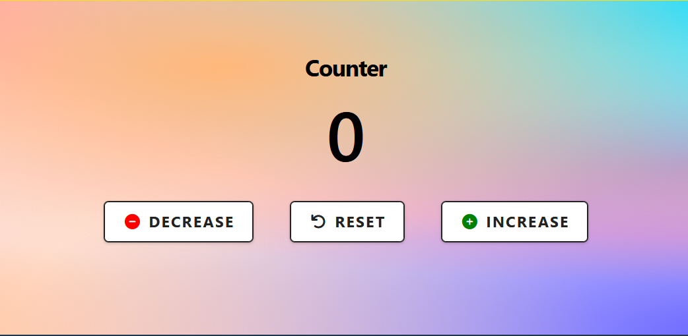

Project folder
In your 📁 /javascript-projects or whatever folder holds all your JavaScript projects, create a new subfolder named 📁 /counter.
In this subfolder, create a web page file named index.html.
Use this index.html file for the HTML, CSS and JavaScript code of this project.
Include your name and student ID in the <title> tag of your index.html file.
Git version control and Vercel
Make your 📁 /counter project folder a Git repo and push it to GitHub.
As you work on your project, commit your changes regularly and push them to GitHub. Use meaningful commit messages to describe your changes.
Your GitHub repo history should show at least three commits.
When your project is complete, import it into Vercel.
Overview
Your completed web page should:
- Display a numeric counter, initially set to zero, inside a <span> element.
- Display three buttons: Decrease, Reset, and Increase.
- Change the counter value when the user clicks a button — incrementing, decrementing, or resetting to zero.
- Colour the counter value green when positive, red when negative, and dark grey (#222) when zero.

Guidelines
Follow these directions:
- Use .addEventListener() to attach a click event listener to a <div> container element that holds the three buttons.
- Write an arrow function as an argument to the event listener.
- Listen for clicks only on button elements with an if (e.target.classList.contains("btn")) { } condition.
- Use an if/else if/else chain inside the arrow function to determine which button was clicked, based on the id of the event target.
- Change the counter value based on which button was clicked.
- Use .innerText to update the counter value on screen each time a button is clicked.
- Use an if/else if/else chain to apply the correct colour to the counter HTML <span> element based on its current value.
- Apply some CSS styling to the counter display and the buttons.
- Centre-align the HTML elements in your web page, both vertically and horizontally.
- Use the Font Awesome library to add suitable icons to the buttons.
- Add comments to your code.